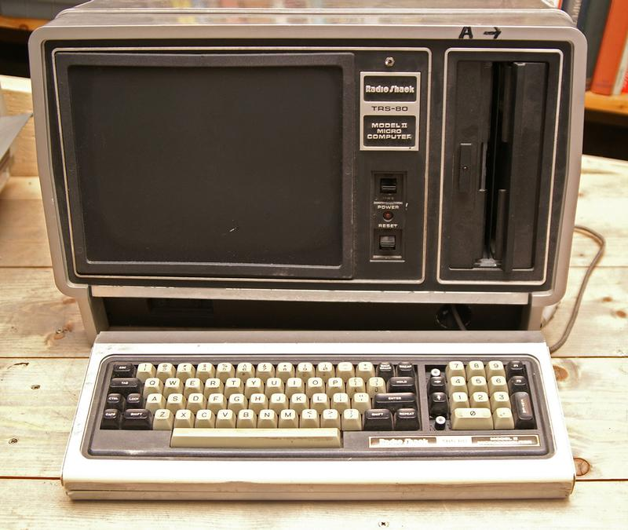
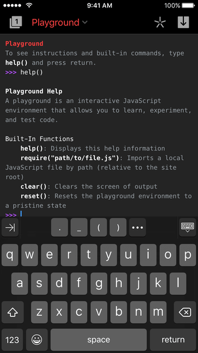

Hello There!

I’ve been a software developer for a long time. I loved it when I started; I love it even more now.
A lot has changed since I looked for the latest programming books at Schuler Books and read Windows/DOS Developer’s Journal. Now I have a super computer in my pocket that’s connected to the world. How did I get so lucky as to find a career that just keeps getting more interesting, more fun, and more challenging?
There was a time when I was driven to memorize the Windows 3.0 API as a badge of honor. Now I have Google and Stack Overflow, along with a bunch of new languages and tools, libraries and packages, concepts and terms.
I’m motivated to be productive in a development world and culture that seems so different from that of my career beginnings. On this blog, I’m going to write about my efforts to make things with software and stay relevant and employable. The particular knowledge I had in the 1980s-1990s-2000s isn’t in high demand now, so I’m learning Python and JavaScript, Jupyter Notebooks, node.js, GitHub, AWS, etc. But the design, debugging, problem solving, organization, and communication skills I've nurtured over time continue to serve both me and my employer well.
I know there are others in a similar situation. Maybe this will resonate with you? Maybe you’ll have suggestions for how I can do this better? I’d welcome your thoughts.
